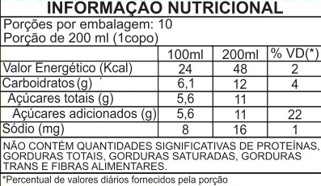
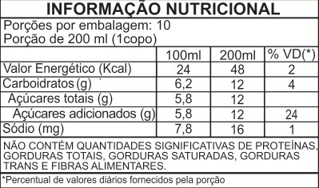

Bebida à base de guaraná, com aromas naturais, baixo teor de calorias e redução de açúcares, ideal para quem busca sabor e leveza no dia a dia.
Bebida à base de tubaína, baixo teor de calorias e redução de açúcares — ideal para quem busca sabor, frescor e bem-estar.
Bebida à base de maçã, com aromas naturais, baixo teor de calorias, reduzido em açúcares e com muito sabor, ideal para quem busca leveza no dia a dia.
Bebida à base de cola, com baixo teor de calorias, reduzido em açúcares e com muito sabor, ideal para quem busca leveza no dia a dia.
Bebida à base de laranja, com aromas naturais, reduzido em açúcares e com muito sabor, ideal para quem busca leveza no dia a dia.
Bebida à base de abacaxi, com aromas naturais, reduzido em açúcares e com muito sabor, ideal para quem busca leveza no dia a dia.
Bebida à base de uva, com aromas naturais, reduzido em açúcares e com muito sabor, ideal para quem busca leveza no dia a dia.
Bebida à base de limão, com aromas naturais, baixo teor de calorias e redução de açúcares, ideal para quem busca sabor e leveza no dia a dia.